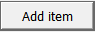

2.3 Pengelolaan Database
Pengelolaan Database
Setelah folder LUMENS database selesai dibuat, masih perlu ditambahkan beberapa data sesuai dengan kebutuhan masing-masing Modul yang akan digunakan.
Beberapa data yang perlu ditambahkan, diantaranya:
- Beberapa peta tutupan lahan dari tahun yang berbeda (raster)
- Peta unit perencanaan (raster)
- Peta dari beberapa konsesi (vector)
- Tabel acuan tutupan lahan (tabular)
- Tabel factor emisi perubahan lahan (tabular)
- Tabel acuan NPV (tabular)
- Add data atau penambahan data
Untuk menambahkan data ke LUMENS database, pilih ikon . Pilih  untuk menambah jumlah kolom sesuai dengan jumlah data yang ingin ditambahkan (Gambar 2.16).
Gambar 2.19 Jendela untuk menambahkan data ke LUMENS database
- Menambahkan data Raster (tutupan dan penggunaan lahan)
Tambahkan data dengan menggunakna ikon  yang ada pada setiap kolom Add data hingga muncul pilihan tipe data (Gambar 2.18). Pastikan tipe yang dipilih sesuai dengan jenis data yang akan ditambahkan.
yang ada pada setiap kolom Add data hingga muncul pilihan tipe data (Gambar 2.18). Pastikan tipe yang dipilih sesuai dengan jenis data yang akan ditambahkan.
Gambar 2.20 Tipe data harus disesuaikan dengan jenis data yang akan ditambahkan
Tambahkan data tutupan lahan, dengan cara pilih
→ Land use/cover→ hingga terbuka jendela seperti Gambar 2.19→ LUMENS_data→ 1_Raster → land_use → lu90_48s_100m.tif→ Open → hingga terbuka jendela seperti Gambar 2.20 → Isi Description dan Year sesuai dengan tahun data yang ditambahkan (Gambar 2.21), tanpa menggunakan spasi, spasi dapat diganti dengan garis bawah maupun strip → Isi Class definition file (optional) dengan data tabel acuan tutupan lahan →  → LUMENS_data→ 3_Tabular → landuse_lut.csv (Gambar 2.22)→ Open
→ LUMENS_data→ 3_Tabular → landuse_lut.csv (Gambar 2.22)→ Open
Gambar 2.21 Data tutupan lahan tahun 1990 yang akan ditambahkan
Gambar 2.22 Struktur dan fungsi dari Add raster data

Gambar 2.23 Pengisian kolom Description dan Year
Gambar 2.24 Tabel acuan tutupan lahan yang digunakan untuk mengisi kolom Class definition file (optional)
Setelah tabel acuan tutupan lahan ditambahkan, akan mucul informasi jenis tutupan lahan beserta masing-masing luasannya dari data raster tutupan lahan yang akan digunakan (Gambar 2.23).
Gambar 2.25 Tampilan kolom Class definition file (optional) setelah tabel acuan tutupan lahan ditambahkan
- Mengisi kolom Classified
Pilih ikon  → pilih kategori yang sesuai untuk setiap tutupan lahan → Save (Gambar 2.24)
→ pilih kategori yang sesuai untuk setiap tutupan lahan → Save (Gambar 2.24)
Gambar 2.26 Daftar fungsi klasifikasi untuk masing-masing tutupan lahan
Gambar 2.27 Tampilan kolom Classified yang sudah diisi seluruhnya, sesuai dengan tutupan lahannya
Lakukan langkah yang sama tutupan lahan tahun 2000, 2005, 2010 dan 2014 atau tutupan lahan lain yang ingin dianalisis. Lanjutkan dengan menambahkan data tabel.
- Menambahkan data tabel (stok karbon)
Pilih  → Table → Select file hingga terbuka jendela seperti Gambar 2.26→ LUMENS_data→ 3_Tabular → cstock.csv → Open → Properties hingga terbuka jendela seperti Gambar 2.27 → Isi kolom Description tanpa menggunakan spasi, spasi dapat diganti dengan garis bawah maupun strip → Save.
→ Table → Select file hingga terbuka jendela seperti Gambar 2.26→ LUMENS_data→ 3_Tabular → cstock.csv → Open → Properties hingga terbuka jendela seperti Gambar 2.27 → Isi kolom Description tanpa menggunakan spasi, spasi dapat diganti dengan garis bawah maupun strip → Save.
Gambar 2.28 Data tabel yang akan ditambahkan
Gambar 2.29 Pengisian kolom Description
- Menambahkan data vector (peta unit perencanaan/ peta konsesi)
Tambahkan data tutupan lahan, dengan cara pilih  → Planning unit → Select File hingga terbuka jendela seperti Gambar 2.18→ LUMENS_data → 2_Vector → consession → HPH_48s.shp → Open → Properties hingga terbuka jendela seperti Gambar 2.28 → Isi Description dengan nama batas konsesi yang ditambahkan tanpa menggunakan spasi, spasi dapat diganti dengan garis bawah maupun strip → Field attribute diisi dengan nama ID tabel atribut yang ingin ditampilkan (Gambar 2.29) → Browse→ LUMENS_data → 3_Tabular → landuse_lut.csv → Dissolve →Save. Dengan cara yang sama, tambahkan peta konsesi lainnya yang akan direkonsiliasi.
→ Planning unit → Select File hingga terbuka jendela seperti Gambar 2.18→ LUMENS_data → 2_Vector → consession → HPH_48s.shp → Open → Properties hingga terbuka jendela seperti Gambar 2.28 → Isi Description dengan nama batas konsesi yang ditambahkan tanpa menggunakan spasi, spasi dapat diganti dengan garis bawah maupun strip → Field attribute diisi dengan nama ID tabel atribut yang ingin ditampilkan (Gambar 2.29) → Browse→ LUMENS_data → 3_Tabular → landuse_lut.csv → Dissolve →Save. Dengan cara yang sama, tambahkan peta konsesi lainnya yang akan direkonsiliasi.
Gambar 2.30 Jendela Data Properties
Gambar 2.31 Pemilihan ID yang akan digunakan
Jika seluruh kolom telah terisi (Gambar 2.30) → Process. Tunggu hingga proses selesai.
Gambar 2.32 Tampilan kolom Add data yang sudah terisi
- Melihat daftar data yang sudah ditambah dalam database
Untuk melihat daftar data yang sudah ditambahakan ke dalam database dan analsisis apa saja yang pernah dijalankan, dapat menggunakan ikon Project status
Gambar 2.33 Nama dan fungsi masing-masing bagian jendela Project status
Created with the Personal Edition of HelpNDoc: Free Kindle producer